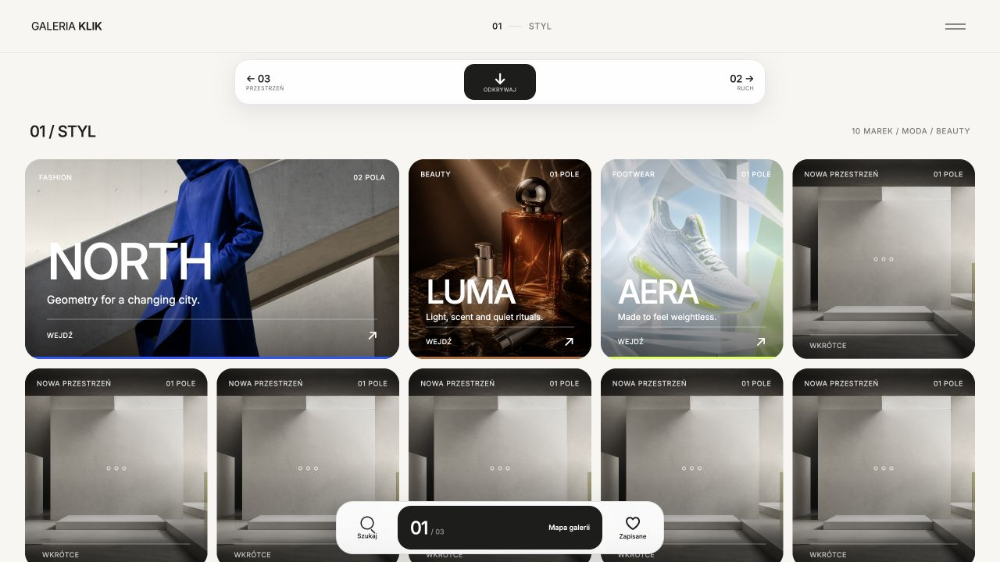

01
Galeria Klik
Interaktywna galeria handlowa, w której marki odkrywa się podczas poruszania pomiędzy trzema tematycznymi piętrami.
Najważniejsze rozwiązania
Otwórz projekt
- Przestrzenna nawigacja między piętrami galerii
- Czytelny podział 30 pól i 9 aktywnych marek
- Obsługa gestów, klawiatury i mniejszych ekranów